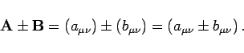
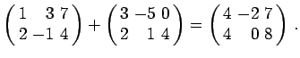
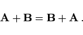
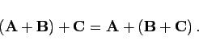

Addition und Subtraktion von Matrizen ist möglich, wenn sie vom gleichen Typ sind. Die Addition bzw. Subtraktion erfolgt elementweise für jeweils gleichgestellte Elemente:
|  | (4.21a) |
| Beispiel |
|
 |
Es gelten das Kommutativ- und das Assoziativgesetz der Matrizenaddition:
|  | (4.21b) |
|  | (4.21c) |